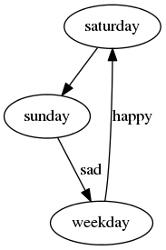

John Doe
March 22, 2005
The ziffness of dorkies must:
As shown here:
This is how we roll
rolling 
Doe, John. 2005. First Book. Cambridge: Cambridge University Press.
———. 2006. “Article.” Journal of Generic Studies 6: 33–34.
Doe, John, and Jenny Roe. 2007. “Why Water Is Wet.” In Third Book, edited by Sam Smith. Oxford: Oxford University Press.